Statystyki biegowe i tri
Statystyki biegowe i tri2019 Triathlon Charzykowy :: 1/2 IM
Czas całkowity - histogramy
Klasyfikacja generalna
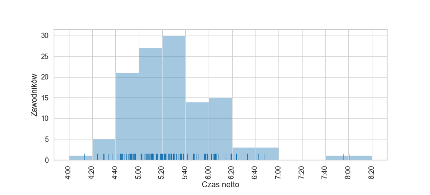
| mean | std | min | 25% | 50% | 75% | max | |
|---|---|---|---|---|---|---|---|
| czas | 5:28:22 | 0:37:55 | 4:12:58 | 5:02:36 | 5:22:28 | 5:50:51 | 8:00:21 |
kobiety
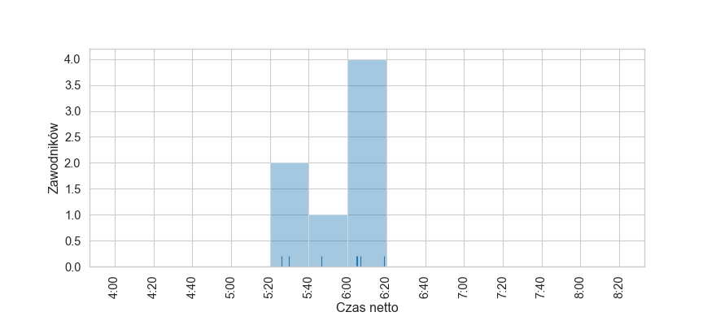
| mean | std | min | 25% | 50% | 75% | max | |
|---|---|---|---|---|---|---|---|
| czas | 5:53:50 | 0:20:07 | 5:26:08 | 5:38:00 | 6:04:30 | 6:05:47 | 6:18:39 |
mężczyźni
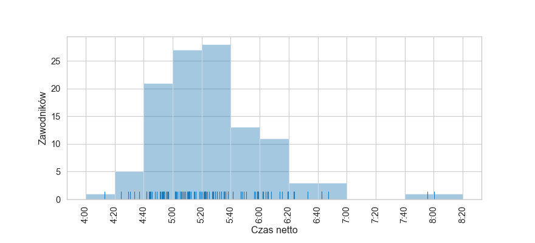
| mean | std | min | 25% | 50% | 75% | max | |
|---|---|---|---|---|---|---|---|
| czas | 5:26:48 | 0:38:15 | 4:12:58 | 5:01:52 | 5:22:04 | 5:47:27 | 8:00:21 |
Czas całkowity - wykresy rybkowe
wg płci
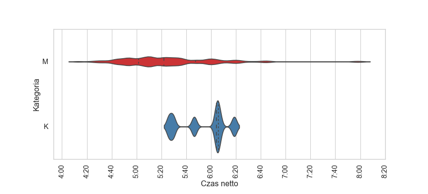
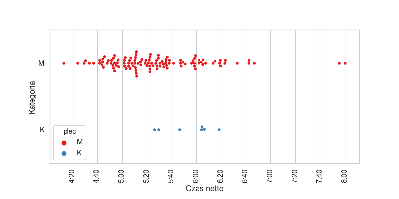
| czas | count | ||||||||
|---|---|---|---|---|---|---|---|---|---|
| count | mean | std | min | 25% | 50% | 75% | max | ||
| plec | |||||||||
| K | 0:00:07 | 5:53:50 | 0:20:07 | 5:26:08 | 5:38:00 | 6:04:30 | 6:05:47 | 6:18:39 | 7 |
| M | 0:01:54 | 5:26:48 | 0:38:15 | 4:12:58 | 5:01:52 | 5:22:04 | 5:47:27 | 8:00:21 | 114 |
wg kategorii
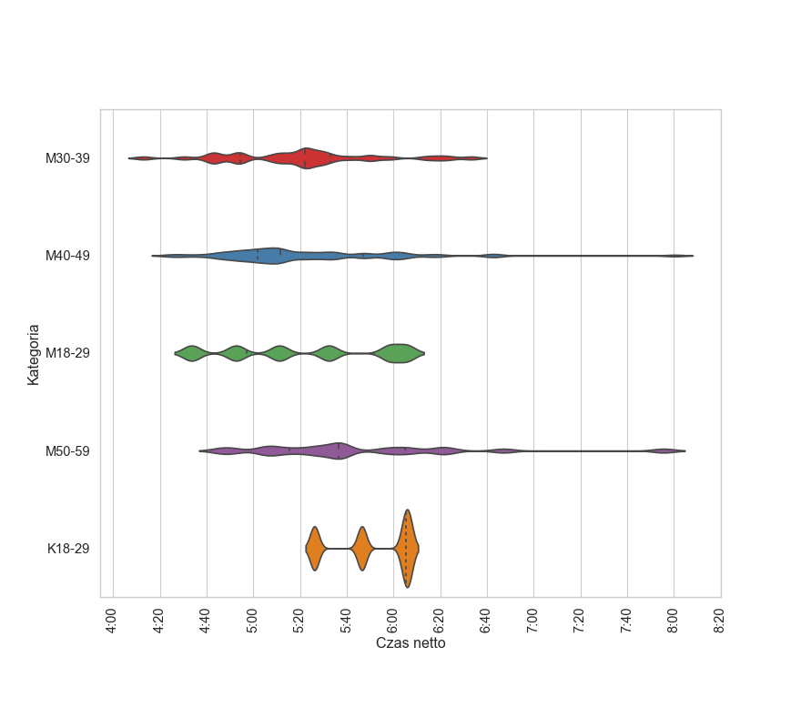
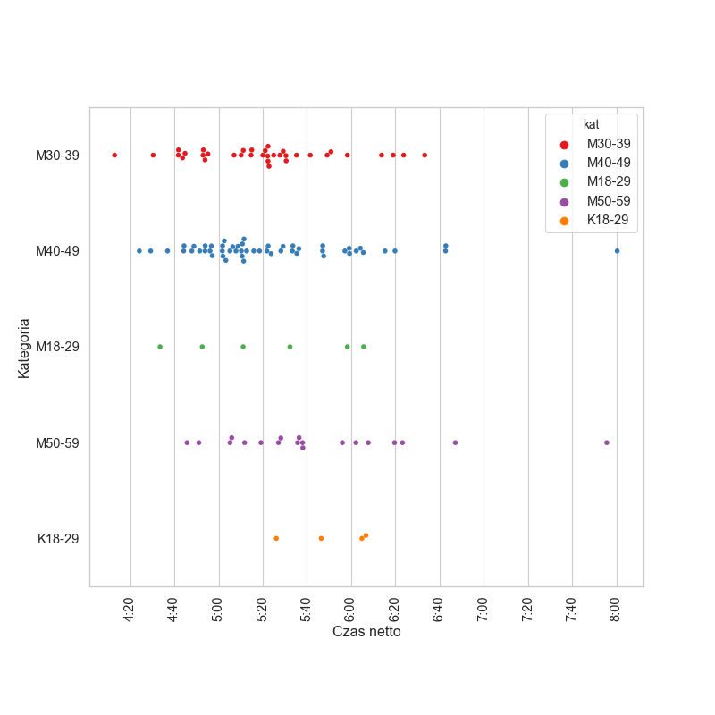
| czas | count | ||||||||
|---|---|---|---|---|---|---|---|---|---|
| count | mean | std | min | 25% | 50% | 75% | max | ||
| kat | |||||||||
| K18-29 | 0:00:04 | 5:51:02 | 0:18:57 | 5:26:08 | 5:41:22 | 5:55:39 | 6:05:19 | 6:06:43 | 4 |
| M18-29 | 0:00:06 | 5:22:16 | 0:36:29 | 4:33:34 | 4:57:14 | 5:21:44 | 5:51:48 | 6:05:39 | 6 |
| M30-39 | 0:00:35 | 5:20:48 | 0:32:24 | 4:12:58 | 4:54:32 | 5:22:15 | 5:32:56 | 6:33:16 | 35 |
| M40-49 | 0:00:53 | 5:24:10 | 0:38:33 | 4:24:10 | 5:01:44 | 5:11:32 | 5:47:04 | 8:00:21 | 53 |
| M50-59 | 0:00:19 | 5:44:57 | 0:45:08 | 4:45:46 | 5:15:29 | 5:36:26 | 6:04:57 | 7:55:38 | 19 |
Dyscypliny
🏊♂️ Pływanie
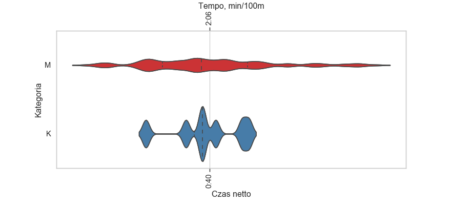
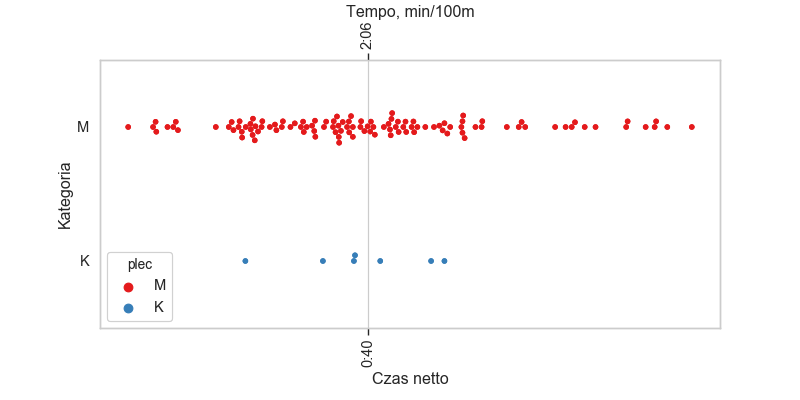
| czas | count | ||||||||
|---|---|---|---|---|---|---|---|---|---|
| count | mean | std | min | 25% | 50% | 75% | max | ||
| plec | |||||||||
| K | 0:00:07 | 0:39:43 | 0:03:06 | 0:34:20 | 0:38:38 | 0:39:24 | 0:41:44 | 0:43:32 | 7 |
| M | 0:01:54 | 0:40:06 | 0:05:46 | 0:28:55 | 0:35:49 | 0:39:18 | 0:43:24 | 0:54:58 | 114 |
T1
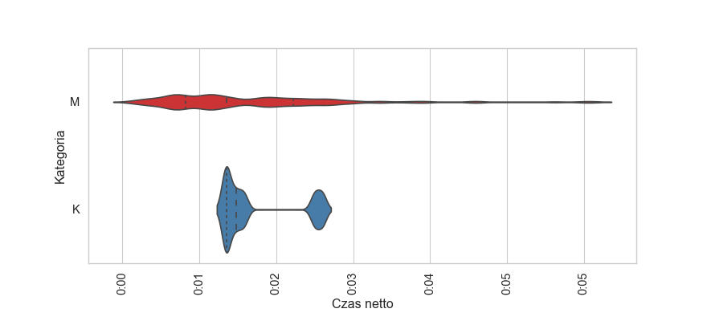
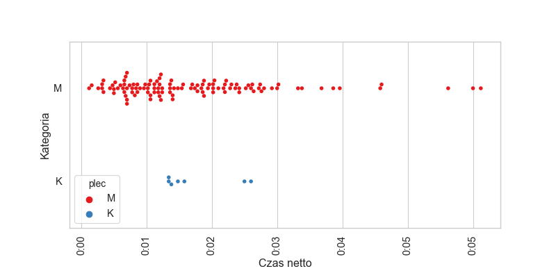
| czas | count | ||||||||
|---|---|---|---|---|---|---|---|---|---|
| count | mean | std | min | 25% | 50% | 75% | max | ||
| plec | |||||||||
| K | 0:00:07 | 0:02:17 | 0:00:27 | 0:01:57 | 0:01:58 | 0:02:04 | 0:02:32 | 0:03:00 | 7 |
| M | 0:01:53 | 0:02:14 | 0:00:59 | 0:00:56 | 0:01:31 | 0:01:58 | 0:02:41 | 0:05:56 | 114 |
🚲 Rower
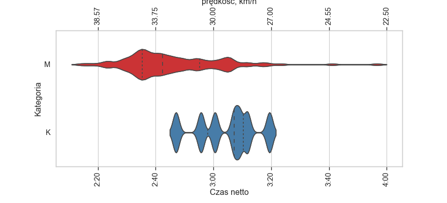
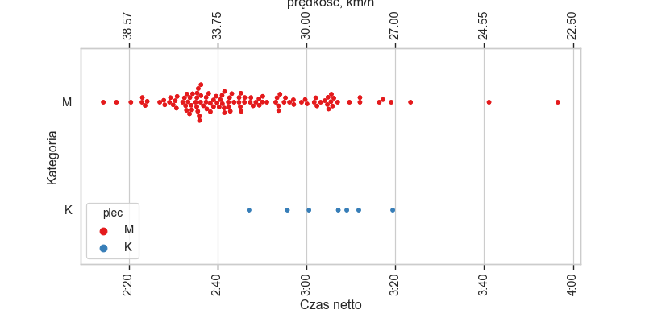
| czas | count | ||||||||
|---|---|---|---|---|---|---|---|---|---|
| count | mean | std | min | 25% | 50% | 75% | max | ||
| plec | |||||||||
| K | 0:00:07 | 3:04:24 | 0:10:48 | 2:47:04 | 2:58:08 | 3:07:10 | 3:10:26 | 3:19:26 | 7 |
| M | 0:01:53 | 2:46:05 | 0:16:40 | 2:14:16 | 2:35:18 | 2:42:25 | 2:55:17 | 3:56:36 | 114 |
T2
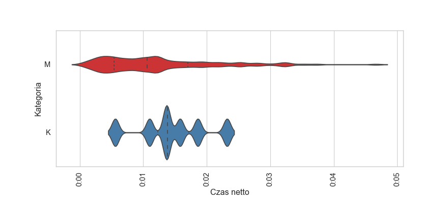
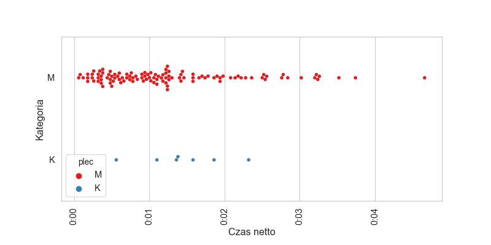
| czas | count | ||||||||
|---|---|---|---|---|---|---|---|---|---|
| count | mean | std | min | 25% | 50% | 75% | max | ||
| plec | |||||||||
| K | 0:00:07 | 0:02:02 | 0:00:27 | 0:01:18 | 0:01:51 | 0:01:59 | 0:02:16 | 0:02:46 | 7 |
| M | 0:01:53 | 0:01:52 | 0:00:46 | 0:00:53 | 0:01:17 | 0:01:43 | 0:02:15 | 0:04:43 | 114 |
🏃 Bieganie

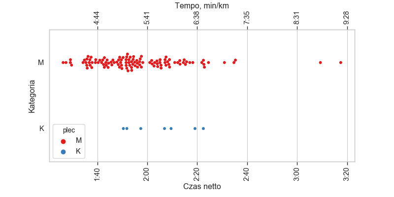
| czas | count | ||||||||
|---|---|---|---|---|---|---|---|---|---|
| count | mean | std | min | 25% | 50% | 75% | max | ||
| plec | |||||||||
| K | 0:00:07 | 2:05:23 | 0:12:43 | 1:50:26 | 1:54:37 | 2:06:55 | 2:14:20 | 2:22:28 | 7 |
| M | 0:01:54 | 1:56:18 | 0:18:17 | 1:26:19 | 1:43:41 | 1:53:26 | 2:05:32 | 3:17:29 | 114 |
Menu
Czas całkowity - histogramyCzas całkowity - wykresy rybkowe
∙ wg płci
∙ wg kategorii
Dyscypliny
∙ 🏊♂️ Pływanie
∙ T1
∙ 🚲 Rower
∙ T2
∙ 🏃 Bieganie
Dystans: 1900.0/90.0/21.095 km
Liczba uczestników: 121
Wygenerowano: 2019-06-12 14:36:25.759319